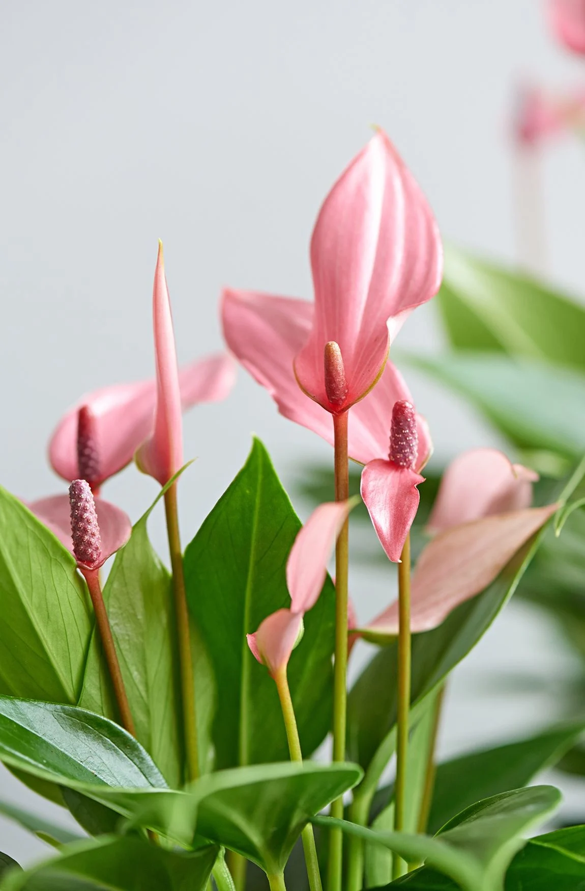

Anthurium Lilli
Familie: Araceae
Descriere: Anthurium Lilli este o plantă elegantă, cu frunze verzi lucioase și flori roșii sau roz, care rezistă mult timp.
Îngrijire: Preferă lumină indirectă, umiditate ridicată și udare moderată.
Nota: Poate înflori pe tot parcursul anului în condiții potrivite.
